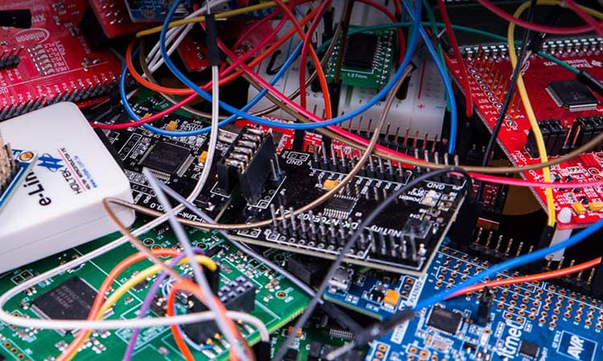
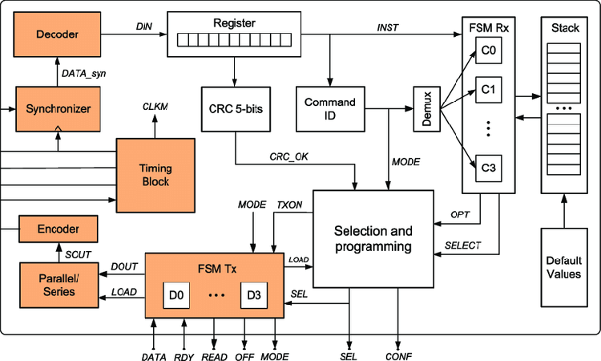
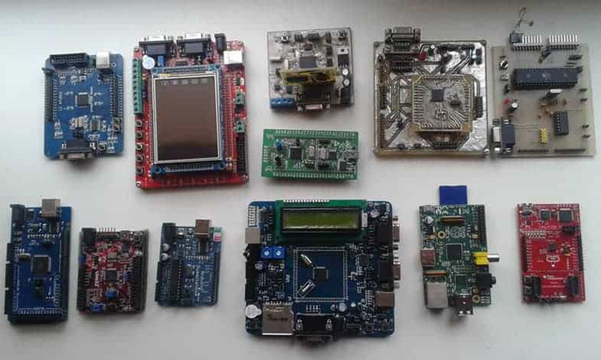
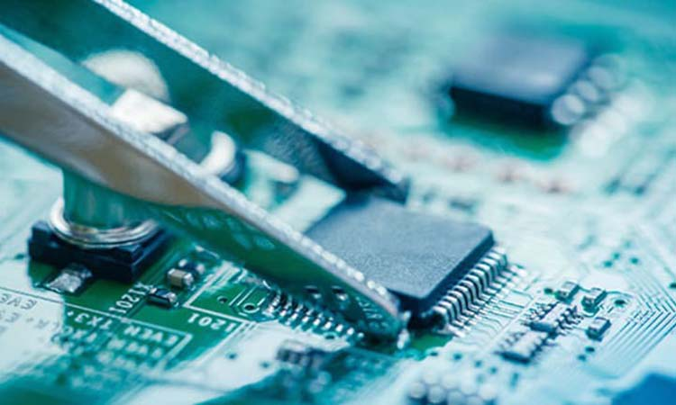

Introduzione
Cosa è un microcontrollore
Un microcontrollore (in inglese microcontroller in acronimo MCU ovvero MicroController Unit), in elettronica digitale, è un dispositivo elettronico integrato su singolo circuito elettronico, nato come evoluzione alternativa al microprocessore e utilizzato generalmente in sistemi embedded ovvero per applicazioni specifiche di controllo digitale.
Architettura
ARM, x86, RiscV...
Quando nell'aprile del 1972 Intel ha introdotto sul mercato il primo processore a 8 bit - lo 8008 - esso consisteva di una ALU (Arithmetic & Logical Unit, ALU) per svolgere operazioni logiche e matematiche e di una unità di elaborazione elementare (Control Processing Unit, CPU) per controllare il flusso di dati e indirizzi tra la ALU e i circuiti esterni di supporto. Successivamente, l'architettura interna del microprocessore (in seguito spesso chiamato semplicemente CPU) si è evoluta velocemente con lo sviluppo di blocchi interni via via più complessi (maggior numero di bit elaborati e movimentati) e con capacità e velocità di calcolo crescenti in modo esponenziale. Per quanto potente, il microprocessore integra sul chip solo la logica di elaborazione mentre richiede sempre delle unità esterne - memorie, gestori di segnali e dispositivi periferici per poter scambiare informazioni e interagire con l'esterno. Il microcontrollore è invece un sistema completo, che integra in uno stesso chip il processore, la memoria permanente, la memoria volatile e i canali (pin) di I/O, oltre ad eventuali altri blocchi specializzati. A differenza dei microprocessori classici, adatti per un uso generale (general purpose), il microcontrollore è inoltre progettato per ottenere la massima autosufficienza funzionale ed ottimizzare il rapporto prezzo-prestazioni in uno specifico campo di applicazioni. Anche l'esecuzione dei programmi applicativi si appoggia su un'architettura hardware diversa da quella tipicamente usata per i microprocessori. Mentre questi ultimi, soprattutto quando usati per computer e personal computer, eseguono i programmi applicativi appoggiandosi a dispositivi di memoria di massa o a memoria volatile, per i microcontrollori il programma applicativo è tipicamente memorizzato su un dispositivo di memoria ROM (come per esempio una EPROM) ed è quindi in realtà un firmware. In generale, essendo concepiti per applicazioni specifiche e per l'uso in condizioni ambientali particolari che impongono limitazioni sia in termini di consumi che in termini di dissipazione di potenza, i microcontrollori presentano caratteristiche meno spinte rispetto ai microprocessori ma risultano più economici di questi ultimi sia per l'integrazione in un solo chip di una serie di componenti sia per fattori di economia di scala legati ai volumi di produzione molto più elevati.
Tipologie
Quanto piccolo deve essere?
Si potrebbe pensare che un microcontroller a 32 bit è racchiuso in un pacchetto più grande di un microcontroller a 8 bit, ma ciò non è sempre vero. Alcuni microcontrollers a 8, 16 e 32 bit hanno lo stesso fattore di forma (ad esempio, Microchip offre una serie di microcontrollori con diverse profondità di bit tutti racchiusi in pacchetti TQFP-64). I microcontrollori a 8 bit sono disponibili in pacchetti DIP, come si vede nelle diffusissime schede Arduino. Uno dei vantaggi principali di un microcontrollore a 32 bit rispetto a uno a 8 bit è la sua velocità di elaborazione maggiore. Un tipico microcontrollore a 8 bit in genere ha una velocità di clock di 8 Mhz, mentre un microcontrollore a 32 bit può raggiungere frequenze di centinaia di Mhz. Se stai utilizzando il microcontrollore solo per attivare un relè meccanico, potresti non notare la differenza di velocità di elaborazione dei dati; tuttavia, i vantaggi diventano rapidamente evidenti se esegui applicazioni che richiedono numerose elaborazioni di dati complesse. Ad esempio, un sistema di controllo degli accessi che elabora migliaia di transazioni al giorno richiede senza dubbio un microcontrollore a 32 bit.
Costo
Qual è il tuo budget?
Dal momento che il design di Arduino è open source, ci sono molti cloni della gamma originale disponibili online per un costo significativamente inferiore rispetto alle schede ufficiali. Usare una clone board può farti rispare, quindi, usare un vero Arduino nel tuo prossimo progetto, oppure non usare un vero Arduino nel tuo prossimo progetto? Il prezzo di Arduino originale è troppo alto? Perché dovresti spendere i tuoi soldi per i prodotti originali Arduino invece di comprare un clone? Mi serve una piattaforma ARM a 32bit o mi bastano gli 8bit di un Arduino UNO? Ho il budget per utilizzare un controllore con le feature che mi servono ed altre che potrei utilizzare in una seconda implementazione o aggiornamento del codice sorgente?
Conclusione
Tira una linea e scegli
Ci sono molte ottime alternative ad Arduino, tutte con le loro differenze e benefici. Alcune hanno dimensioni nettamente minori, altre montano delle MCU molto più spinte o altre più efficienti. Alcune hanno pure dei moduli dedicati per la sicurezza. Sta a te decidere quale scegliere in funzione di cosa devi fare
